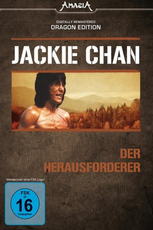

#9115 Der Herausforderer
 
 IMDB-Wertung: 5.5 / 10
IMDB-Wertung: 5.5 / 10  Metascore: 0
Metascore: 0 
Einem Rachefeldzug der "Killerbienenbande" fällt die gesamte Familie Leis, mit Ausnahme des einzigen Sohnes Chan, zum Opfer. Die Anführerin der Bande verliebt sich in ihn. Er aber hat bereits vor dem Überfall seine Verlobte Chin Chin bei seinem Feund Chuan, dem Gouverneur der Region, in Sicherheit gebracht. Chuan entpuppt sich als falscher Freund mit unehrenhaften Interessen an Chin Chin. Er ist geichfalls der heimliche Anführer der "Blutregenmänner", die neben dunklen Geschäften auch Chan töten sollen. Der läßt sich Nachhilfestunden in Sachen Nahkampf von seiner Haß-Freundin der Killerbienen erteilen. In einem mühevollen und gnadenlos geführten Zweikampf gelingt es, Chuan zu töten.
Jahr: 1977
Dauer: 107 Minuten
FSK: 16
Land: Hong-Kong Studio: Splendid FilmTonspuren:
Untertitel: Deutsch,
Auflösung: 1080p (1920x808) Größe: 8140 MB
Genre: Action, Drama
Regisseur: Wei Lo
Drehbuch: Lung Ku
Soundtrack: Fang Chi Chen
Darsteller:
 Jackie Chan als Cao Lei
Jackie Chan als Cao Lei- Feng Hsu als Ting Tan-Yen
- Hui Lou Chen als
- Ching-Hsia Chiang als
 Wen Tai Li als
Wen Tai Li als - Chi Ma als
- Ie Lung Shen als
- Han Ting als
- Lin Tung als
- Kuo Wang als First Dragon
- Ling Lung Yu als
- Chris Hilton als Hsiao Lei (uncredited)
- Ted Thomas als Lei Chi Fung (uncredited)
Datei: X:\HD-Eastern-Collections\Jackie Chan\Herausforderer, Der (1977, FSK16, 1920x808).mkv seit 19.07.2018
Festplatte: HD Eastern+Western
 Es gibt insgesamt 58 Filme in der Gruppe 'HD-Eastern-Collections\Jackie Chan'
Es gibt insgesamt 58 Filme in der Gruppe 'HD-Eastern-Collections\Jackie Chan'